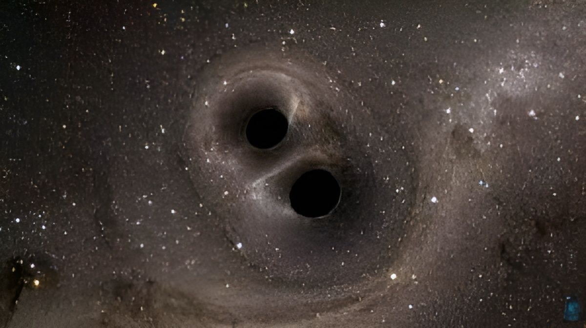
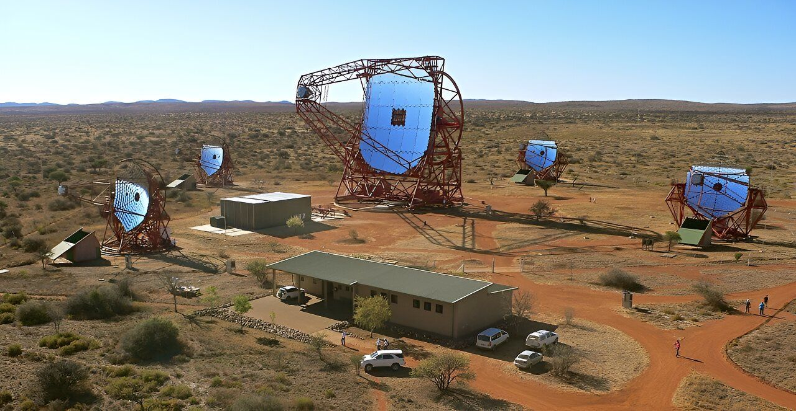
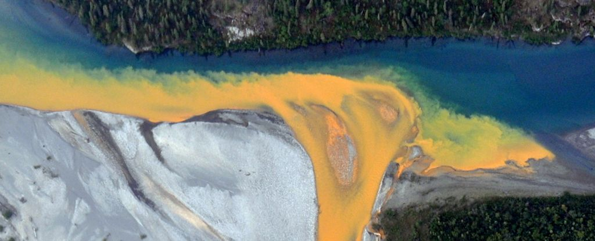
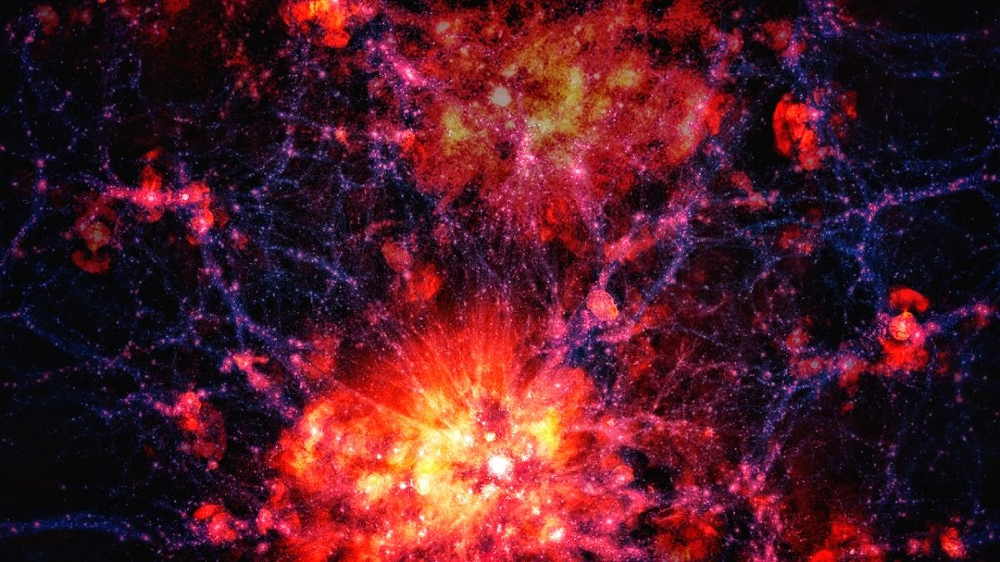
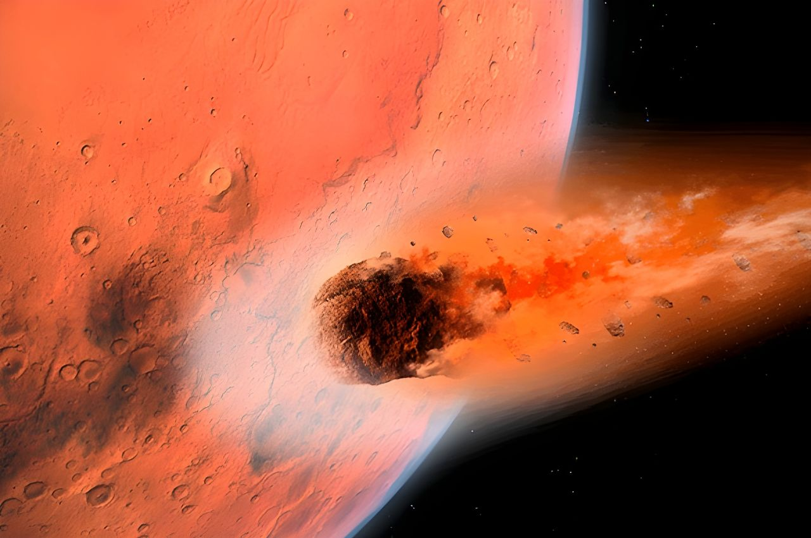
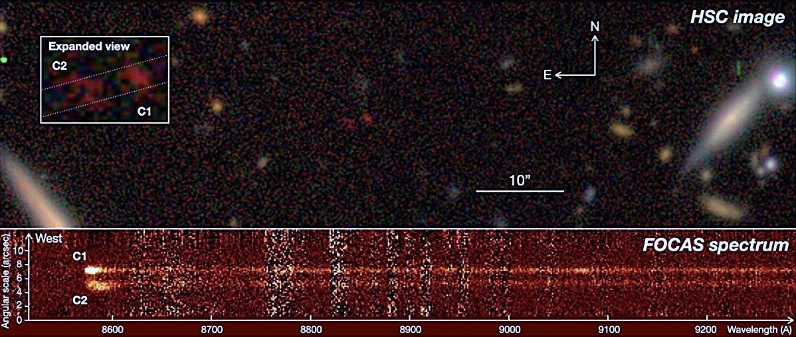
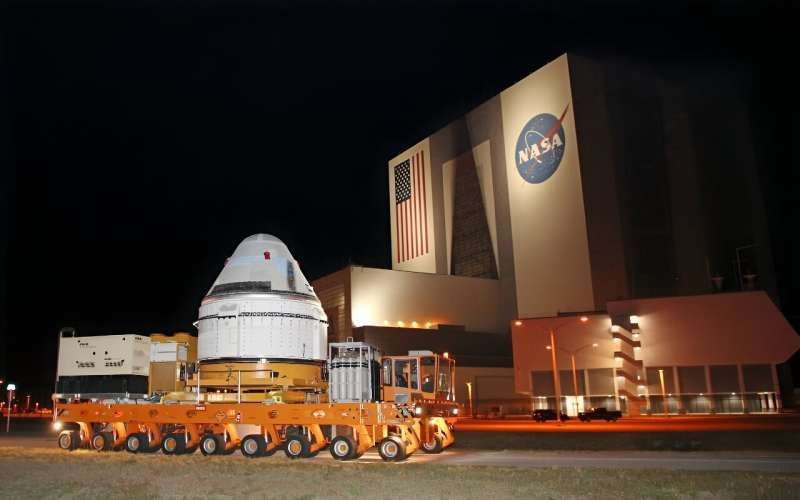
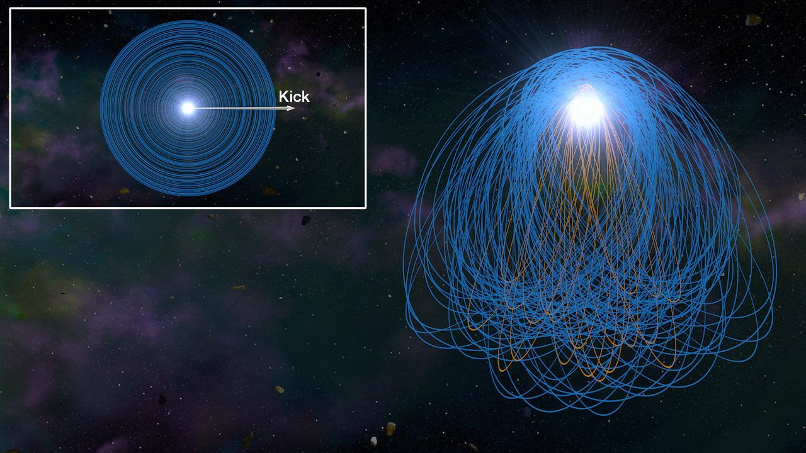
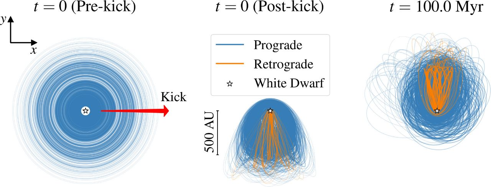

В нашем Telegram канале больше научных новостей, а также интересные обсуждения в комментариях, уважительная атмосфера общения.
29 Мая 2024
Magellan нанес на карту 98% поверхности планеты с 1990 по 1992 год, и полученные им изображения остаются самыми подробными изображениями Венеры на сегодняшний день.
Ученые проанализировали архивные данные миссии Магеллан чтобы выявить изменения поверхности, указывающие на образование новых пород из потоков лавы связанных с вулканами, которые извергались во время обращения космического аппарата по орбите планеты. Высота новой породы при обоих извержениях в среднем приросла на 3 - 20 метров.
Двумя исследованными местами были вулкан Сиф Монс в регионе Эйстла и западная часть Ниобе Планитиа, которая изобилует многочисленными вулканическими объектами. Они также подсчитали, что при извержении первого вулкана образовалось около 30 квадратных километров горных пород, а в результате извержения второго их образовалось около 45 квадратных километров.
28 Мая 2024



Учёные планируют начать прямое наблюдение излучения Хокинга от чёрных дыр с помощью уже существующих приборов.
Когда две чёрные дыры сталкиваются и сливаются, а также когда происходит слияние нейтронной звезды и чёрной дыры они распространяют гравитационные волны, которые хорошо обнаруживаются уже давно активно работающими детекторами. Из сложных решений уравнений Эйнштейна следует, что из-за чрезвычайно сильного нелинейного гравитационного поля в некоторых областях их слияния могут образовываться меньшие чёрные дыры с массой порядка небольшого астероида - около 20 000 тонн - так называемые "фрагменты чёрных дыр" или "кусочки сливающихся чёрных дыр". 
Учёные планируют начать прямое наблюдение излучения Хокинга от чёрных дыр с помощью уже существующих приборов.
Согласно расчётам Хокинга время испарения таких объектов соответствует примерно 16 годам, но это время может сильно меняться из-за нахождения их вблизи всё тех же мощных нелинейных гравитационных полей.
Группа учёных представила численные расчеты на основе общедоступного кода - BlackHawk, который вычисляет спектры испарения излучения Хокинга для любых чёрных дыр. Согласно ним, излучение Хокинга от фрагментов чёрных дыр создает гамма-всплески, которые имеют характерный спектр. А испарение чёрных дыр должно порождать фотоны с энергией выше 1ТэВ - триллион электронвольт.
Такое излучение может быть легко обнаружено атмосферными черенковскими телескопами высокой энергии. В настоящее время существует четыре таких телескопа, которые смогут обнаружить такие каскады черенковского излучения. Учёные уже отправили запросы на работу с этими телескопами.
27 Мая 2024


Осуществилась мечта астрономов - телескоп, который может наблюдать звезды, планеты и многое другое в течение дня.
Первоначально разработанный для сверхчувствительных наблюдений за ночным небом, телескоп продемонстрировал способность наблюдать звезды, планеты и другие космические объекты средь бела дня.
Телескоп Huntsman, расположенный в обсерватории Сайдинг-Спрингс в городе Кунабарабан, сочетает в себе астрономическую камеру и астромеханическое оборудование с уникальным набором из 10 высокочувствительных 400-миллиметровых объективов Canon. Объективы ориентированы на параллельную работу для наблюдения за одним и тем же участком неба и получения тысяч снимков с короткой экспозицией всего лишь в одну секунду. Используя специальные широкополосные фильтры телескопа Huntsman, астрономы смогли блокировать большую часть дневного света, при этом пропуская только определенные длины волн, пришедшие от разных космических объектов.
Одной из целей их исследований была звезда Бетельгейзе, расположенная примерно в 650 световых годах от Земли, которая в скором времени готовится взорваться сверхновой. Также стало возможным осуществлять непрерывный мониторинг спутников, космического мусора и других искусственных объектов, вращающихся вокруг Земли в целях предотвращения потенциально опасных столкновений.
Учитывая, что вокруг планеты уже вращается около 10 000 активных спутников, а в следующем десятилетии планируется запустить еще 50 000 спутников на низкую околоземную орбиту, существует явная потребность в специализированных комплексах дневных и ночных телескопов для постоянного обнаружения и отслеживания спутников и фрагментов их обломков.
26 Мая 2024


Реки Аляски приобрели настолько интенсивный оранжевый цвет, что это отлично видно даже с орбиты.
Учёные использовали спутниковые снимки и данные полученные от местного населения чтобы выявить более 75 рек и ручьёв окрашенных в этот необычный оранжевый цвет на протяжении почти 1000 километров. Затем они собрали образцы воды из них. Оказалось, что образцы содержали высокие концентрации железа и токсичных металлов, включая: цинк, медь, никель и свинец в весьма значительном количестве. А другие загрязняющие вещества повышали кислотность воды с обычного pH 8 до 2,3. 
Реки Аляски приобрели настолько интенсивный оранжевый цвет, что это отлично видно даже с орбиты.
Результаты анализов были похожи на кислотный сток при добыче полезных ископаемых, однако поблизости от этих мест никаких шахт не оказалось.
Выводы учёных заключаются в том, что таяние вечной мерзлоты позволило воде глубже проникнуть в грунт и провзаимодействовать с минералами, которые были заперты в нём в течение многих тысяч лет.
Поскольку климат продолжает теплеть, особенно в полярных регионах, учёные ожидают, что вечная мерзлота продолжит таять, и везде, где есть эти типы минералов, есть вероятность, что реки и ручьи станут оранжевыми и качество воды резко ухудшится. Изменение состава воды в этих реках уже привело к резкому сокращению разнообразия беспозвоночных и рыб в этих водоёмах. И это угрожает не только дикой природе, но и местным жителям, которые используют эти ручьи и реки в качестве источника питьевой воды, а также для рыбной ловли.
25 Мая 2024


Получено доказательство того, что вокруг чёрных дыр существует "область погружения", где вещество перестает вращаться вокруг чёрной дыры и падает прямо в горизонт событий.
Теория Эйнштейна утверждает, что на достаточной близости к чёрной дыре частицы уже не могут двигаться по круговым орбитам. Вместо этого они быстро "погружаются" в сторону горизонта событий со скоростью близкой к скорости света. В оксфордском исследовании впервые был проведён глубокий анализ "областей погружения" чёрных дыр с использованием рентгеновских данных полученных при наблюдении чёрных дыр небольшого размера, расположенных относительно близко к нам.
На протяжении многих десятилетий между астрофизиками велись споры о том - можно ли обнаружить "область погружения". Оксфордская команда учёных потратила несколько лет на разработку моделей и в только что опубликованном исследовании представила первое доказательство, основанное на наблюдательных данных.
24 Мая 2024

Впервые в истории астрономии было произведено наблюдение рождения самых ранних галактик во вселенной.
Впервые в истории астрономии было произведено наблюдение рождения самых ранних галактик во вселенной.Впервые в истории астрономии было произведено наблюдение рождения самых ранних галактик во вселенной.
Учёные из Копенгагенского университета стали первыми, кто увидел формирование трёх одних из самых ранних галактик во Вселенной где-то между 13,3 и 13,4 миллиардами лет назад. Открытие было сделано с помощью космического телескопа Джеймса Уэбба.
С его помощью астрономы смогли увидеть большое количество газа, который накапливался в мини-галактике в процессе её формирования. Рождение этих трёх галактик произошло примерно через 400-600 миллионов лет после Большого взрыва.
"Мы являемся свидетелями самого их рождения и построения первых звёздных систем во Вселенной", - заявил доцент Каспер Эльм Хайнц из Института Нильса Бора, который руководил новым исследованием. Рождение галактик произошло в период реионизации вселенной, когда свет некоторых из первых галактик только что пробился сквозь туман из газообразного водорода. Именно эти большие количества газообразного водорода зафиксировали учёные с помощью инфракрасного зрения космического телескопа Джеймса Уэбба.
Научно-исследовательская группа уже подала заявку на увеличение времени наблюдения космическим телескопом Джеймса Уэбба в надежде расширить результаты наблюдений и узнать больше о самой ранней эпохе формирования галактик. В их планах составлении карты наблюдений за формирующимися галактиками с высокой детализацией.
22 Мая 2024

Космический телескоп, предназначенный для открытия экзопланет транзитным методом - TESS, обнаружил экзопланету в зоне обитаемости размером почти с Землю в 40 световых годах от нас.
Расстояние, разделяющее Gliese 12 и новую планету, составляет всего 7% от расстояния между Землей и Солнцем. При этом планета получает от своей звезды в 1,6 раза больше энергии чем Земля от Солнца, и около 85% от энергии получаемой Венерой. Средняя температура поверхности этой планеты оценивается примерно в 42 градуса Цельсия.
Gliese 12 b обещает рассказать астрономам больше о том - как расположенные близко к своим звёздам планеты в обитаемой зоне сохраняют или теряют свою атмосферу. А поскольку скорость вращения этой планеты вокруг её звезды достаточно высока, то у них теперь есть больше возможностей по её изучению прямым транзитным методом, которым она и была обнаружена.
21 Мая 2024

Группа астрономов доказала, что у Марса значительно больше шансов столкнуться с потенциально опасными астероидами чем у Земли.
Учёные исследовали количество потенциально опасных астероидов (ПОА), которые достаточно велики для того, чтобы вызвать серьезное столкновение с Марсом, и сравнили их с ПОА для Земли. Изучив данные о прошлых столкновениях с Марсом, включая данные об астероидах и кометах, траектория которых пересекает Марс из-за близости Марса к поясу астероидов, учёные создали модель, показывающую - как часто они могут сталкиваться с Марсом.Группа астрономов доказала, что у Марса значительно больше шансов столкнуться с потенциально опасными астероидами чем у Земли.
Оказалось, что вероятность столкновения ПОА с Марсом примерно в 2,5-3 раза выше, чем с Землёй. А именно - существует примерно 17 000 ПОА, которые могут приблизиться к Марсу или столкнуться с ним, и примерно 4700 таковых с Землёй. Существует 52 ПОА, которые находятся на пути к Марсу, и их даже можно увидеть с Земли.
Научная группа также отмечает, что новые телескопы, которые появятся в ближайшем будущем представят гораздо более точные данные.
20 Мая 2024

Губка-корзинка стала предметом исследований учёных.
Недавно группа учёных с помощью компьютерного моделирования с чрезвычайно высокой точность рассчитала - как структура скелета губки-корзинки отклоняет очень медленные глубоководные течения вверх в центральную полость её тела, чтобы она могла питаться планктоном и другим морским детритом, который она отфильтровывает из воды.
Ученые использовали мощный суперкомпьютер Leonardo в суперкомпьютерном центре Италии для создания высокореалистичной 3D-копии губки, состоящей из 100 миллиардов отдельных точек, которые воссоздают сложную спиральную структуру гребня губки. Этот цифровой двойник позволил проводить эксперименты невозможные на живых губках, которые не могут выжить вне своей глубоководной среды обитания. Они выполнили высокодетализированное моделирование течения воды вокруг и внутри компьютерной модели скелета губки-корзинки. Благодаря огромной вычислительной мощности Leonardo, позволяющей выполнять квадриллионы вычислений в секунду, они смогли смоделировать широкий диапазон скоростей течения воды и внешних условий.
Выяснилось, что губка-корзинка способна поглощать питательные вещества пассивно, без какого-либо активного механизма перекачки. Она обеспечивает это благодаря своей спиральной ребристой внешней поверхности, которая функционирует как винтовая лестница. Это позволяет ей пассивно направлять воду вверх через пористый решетчатый каркас, и все это абсолютно без затрат энергии на перекачку. Однако, способность губки пассивно поглощать пищу работает только при очень низких скоростях течения — всего несколько сантиметров в секунду в её нормальной среде обитания. При более высоких скоростях потока решетчатая структура помогает уменьшить сопротивление и защитить структуру губки от повреждений, при этом не унеся губку с места её обитания.
Учёные утверждают, что полученные ими биомиметические инженерные данные могут помочь в проектировании более эффективных химических реакторов за счет оптимизации структуры потока внутри реактора при минимизации сопротивления потока снаружи. Также подобные ребристые пористые поверхности могут улучшить фильтрацию воздуха и системы вентиляции в небоскрёбах и других сооружениях. Асимметричные спиралевидные гребни могут даже послужить основой для создания корпусов или фюзеляжей летальных аппаратов с низким лобовым сопротивлением, которые остаются обтекаемыми, обеспечивая при этом воздушные потоки внутри.
19 Мая 2024

"Сахарная вата" - одна из самых неплотных экзопланет.
Расположенная примерно в 1200 световых годах от Земли, WASP-193 b обращается вокруг солнцеподобной звезды на расстоянии чуть более 10 миллионов километров и совершает 1 оборот вокруг неё всего за 6,2 земных дня. При этом, Земля имеет плотность 5,5 граммов на кубический сантиметр, плотность Юпитера около 1,3 граммов на кубический сантиметр, а плотность WASP-193 b составляет всего 0,059 граммов на кубический сантиметр. Сахарная вата примерно аналогична по плотности - около 0,05 граммов на кубический сантиметр. За что планета и получила своё прозвище.
Группа учёных, которая сейчас занимается изучением этой планеты считает, что WASP-193 b состоит в основном из водорода и гелия, как Юпитер и другие газовые гиганты. Ученые предполагают, что эти газы образуют сильно раздутую атмосферу, которая на десятки тысяч километров шире атмосферы Юпитера. А раздутая атмосфера, вероятно, является результатом бомбардировки WASP-193 b мощным излучением близкой звезды. А вот чему они пока не находят объяснения, так это тому - как именно WASP-193 b поддерживает эту сверхпухлую атмосферу - почему её до сих пор не сдуло солнечным ветром, поскольку все существующие на данный момент модели формирования планет этого ни как не могут объяснить.
Открытие WASP-193 b пополнило огромное разнообразие планет за пределами Солнечной системы, что может помочь ученым пересмотреть многие модели формирования планет.
19 Мая 2024

Обнаружено ископаемое ранее неизвестного паукообразного возрастом более 300 миллионов лет.
Более 300 миллионов лет назад разные виды паукообразных обитали в каменноугольных лесах Северной Америки и Европы. Среди них были как знакомые нам виды, так и экзотические, которые сейчас встречаются в более теплых регионах.
Очень колючие ноги ископаемого паукообразного напоминают некоторых современных жнецов, но строение его тела сильно отличается от жнецов или любой другой известной группы паукообразных. Что привело ученых к выводу - оно не принадлежит ни к одному из известных отрядов паукообразных.
Конечно такие детали как части рта не видны, что затрудняет точное определение того - какая группа паукообразных является его ближайшими родственниками. Оно может принадлежать к более широкой группе, в которую входят пауки и скорпионы.
Эти колючие паукообразные пришли из того времени, когда эволюция паукообразных сильно экспериментировала с различным строением их тел.
18 Мая 2024

Судя по наблюдениям вспышек с Марса с помощью прибора мониторинга экстремального ультрафиолетового излучения, это самая крупная вспышка, которую учёные наблюдают с тех пор как автоматическая межпланетная станция для исследования атмосферы Марса - MAVEN, являющаяся частью проекта Mars Scout, прибыла к Марсу в 2014 году. Уже не первый раз MAVEN наблюдает красочное световое шоу. В августе 2022 года полярные сияния были замечены как на дневной, так и на ночной сторонах красной планеты.
Однако, в отличие от Земли, у Марса нет магнитного поля, защищающего его от сильно заряженных частиц. Вот почему в связи с подобным событием важно, чтобы MAVEN продолжала следить за верхними слоями атмосферы Марса и изучать их. Ожидается, что эта вспышка временно увеличит потерю атмосферы Марса. И учёные сильно заинтересованы в использовании MAVEN для измерения воздействия этого крупного события. Это даст учёным представление о том - как более молодое и активное Солнце разрушило некогда плотную атмосферу Марса, превратив его в замороженную и высохшую планету, которую мы видим сегодня.
17 Мая 2024
Амальтея была открыта 9 сентября 1892 года Эдвардом Эмерсоном Барнардом. Она носит имя нимфы - Амальтеи из древнегреческой мифологии.
Амальтея является последним спутником Юпитера открытым путем прямого визуального наблюдения, и первым его спутником открытым с тех пор, как Галилей впервые обнаружил четыре главных галилеевых спутника в 1610 году. На сегодняшний день известно 95 спутников Юпитера - в основном захваченных им астероидов. Как и другие маленькие спутники, Амальтея недостаточно велика, чтобы вытянуться в настоящую сферу. Вместо этого, подобно спутникам Марса она неправильной формы, в виде картофелины.
Она подвергается серьезному приливному изгибу благодаря огромному гравитационному полю Юпитера, будучи расположена всего в 180 000 километрах от него - чуть более чем в 100 000 километрах от предельного радиуса Роша Юпитера. Любое приближение к Юпитеру разорвет Амальтею на части.
15 Мая 2024
За последние сутки на Солнце произошли три вспышки класса X: X1,7, X1,3 и колоссального X8,8, что является мощнейшей солнечной вспышкой за текущий 11-летний солнечный цикл.
14 Мая 2024

Используя 8,2-метровый оптический телескоп Subaru, астрономы обнаружили пару сливающихся квазаров
Два квазара: HSC J121503.42-014858.7 (C1) и HSC J121503.55-014859.3 (C2) разделены 39 000 световыми годами, но, при этом, связаны друг с другом. В ходе наблюдений были обнаружены линии Лаймана-альфа между C1 и C2, а также иные протяженные структуры видимые в других спектральных линиях. Используя 8,2-метровый оптический телескоп Subaru, астрономы обнаружили пару сливающихся квазаров
Астрономы подчеркнули, что данные указывают на то, что эти два квазара подвергаются слиянию. C1 и C2 имеют красное смещение 6,05, что делает их самыми удаленными сливающимися квазарами, обнаруженными на сегодняшний день.
В сопроводительном документе будут представлены свойства газа и пыли, зафиксированные наблюдениями с помощью массивов Atacama Large Millimeter/submillimeter Array, которые дают дополнительные доказательства и подробные измерения слияния, а также демонстрируют, что эти два источника излучения не являются изображениями одного квазара прошедшего через гравитационное линзирование.
12 Мая 2024

Ученые обнаружили ещё 9 ранее неоткрытых спутников нашей галактики.
Ко всеобщему удивлению, ученые обнаружили ещё 9 ранее неоткрытых галактик-спутников, что намного больше, чем ожидалось. Предполагалось, что в радиусе 10 парсек от вириального радиуса (652 313 световых лет) Млечного Пути должно быть 3,9 ± 0,9 галактик-сателлитов, исходя из распределения плотности Млечного Пути. Вместо этого команда обнаружила больше — целых 9 галактик.
При помощи космического телескопа Gaia, собирающего точную информацию о местоположении астрономических объектов, выяснилось, что большинство галактик-спутников, вращающихся вокруг нашей собственной, являются захваченными Млечным путём галактиками. Хотя давно известно, что даже Большое и Малое Магеллановы облака также ранее были захвачены.
Для дальнейшего продвижения в этом направлении потребуются последующие исследования звезд в галактиках-спутниках и получение их изображений с высоким разрешением.
Очень сильно занят, в том числе и работой над свежими выпусками "Неземного подкаста" и "Вселенной+". К сожалению, нет возможности успевать делать всё и одновременно.
11 Мая 2024
В продолжение темы о необычных животных. Гребневик.
Наиболее древние ископаемые останки гребневиков датируются 525 миллионами лет назад. По последним данным, базирующимся на результатах молекулярной филогенетики, эволюция гребневиков во многом шла параллельно всем остальным животным, что уже само по себе является поразительным фактом.
Зрительный эффект сигнальных огней при движении гребневиков возникает из-за дифракции благодаря постоянно движущимся ресничкам. Однако 150 известных видов гребневиков способны и к биолюминесценции.
Гребневики могут съедать за одни сутки в 10 раз больше своей массы и вырастать вдвое также за одни сутки. А также за эти же одни сутки могут откладывать до 7000 яиц. А обитают они по всему миру и найдены во всех частях Мирового океана и всех морях.
10 Мая 2024

Галактика UGC 9684 является фабрикой сверхновых.
Внимание астрономов к этой галактике привлёк взрыв сверхновой произошедшей в 2020 году. С тех пор она стала уже неразличима на этом снимке, который был сделан в 2023 году. Однако сверхновая 2020 года – не единственная, которую астрономы увидели в этой галактике. С 2006 года в UGC 9684 произошли четыре аналогичных события, что ставит её в один ряд с наиболее активными галактиками производящими сверхновые.
UGC 9684 - довольно активная звездообразующая галактика, которая, в среднем, производит звёзды массой в одну солнечную каждые несколько лет! Самые массивные из этих звёзд живут всего несколько миллионов лет и заканчивают свои дни взрывами сверхновых. Такой высокий уровень звездообразования делает UGC 9684 настоящей фабрикой сверхновых и галактикой, которая привлекает внимание астрономов надеющихся изучить эти редкие события.
8 Мая 2024

Недавнее исследование, проведенное научной группой физического факультета HKU, показало, что звезда Pop III могла быть разорвана приливным взаимодействием, если бы она оказалась поблизости от массивной чёрной дыры, как и любая другая звезда. При таком событии приливного разрушения (TDE) чёрная дыра питается звёздным веществом, что приводит к крайне ярким вспышкам. Эти вспышки могут светить на расстоянии миллиардов световых лет. А уникальные сигнатуры этих вспышек TDE могут быть использованы для определения звёзд Pop III и получения представления об их свойствах.
Высокоэнергетичные фотоны можно обнаружить на очень большом расстоянии. Но время вспышек будет растянуто из-за расширения вселенной. Эти вспышки будут возникать и затухать в течение очень длительного периода времени, что отличает их от событий TDE в ближайших регионах вселенной. При этом, конечно, растягиваются не только временные рамки вспышек, но и их длина волны. Оптический и ультрафиолетовый свет, излучаемый таким событием трансформируется в инфракрасное излучение при достижении Земли из-за того же расширения вселенной. Космический телескоп Джеймса Уэбба и космический телескоп Нэнси Грейс Роман имеют возможность наблюдать такое инфракрасное излучение с больших расстояний.
6 Мая 2024
Созданная на суперкомпьютере НАСА симуляция позволяет наблюдать приближение, короткий оборот по орбите, а затем пересечение горизонта событий сверхмассивной черной дыры в центре нашей галактики.
Моделируемый в этой симуляции горизонт событий чёрной дыры охватывает около 25 миллионов километров - около 17% расстояния от Земли до Солнца. Плоский обруч светящегося газа - аккреционный диск окружает её и служит визуальным ориентиром во время падения. То же самое происходит со светящимися структурами, называемыми фотонными кольцами, которые образуются ближе к чёрной дыре из-за света, облетевшего её по орбите один или несколько раз.
По мере приближения камеры к чёрной дыре она достигает скорости всё более близкой к световой. Свечение аккреционного диска и звёзд на заднем плане усиливается, подобно тому как повышается высота звука приближающегося к наблюдателю гоночного автомобиля. Свет звёзд кажется ярче и белее, если смотреть в направлении движения. Горизонт событий чёрной дыры, фотонные кольца и небо над ним становятся всё более искаженными, и даже образуют множественные изображения, поскольку их свет пересекает всё более искаженное пространство-время.
В режиме реального времени объекту требуется около 3 часов, чтобы опуститься к горизонту событий, совершив по пути почти 2 полных 30-минутных оборота по орбите. Но для любого, кто наблюдает объект издалека, он никогда туда не попадёт. По мере того как пространство-время становится всё более искаженным ближе к горизонту событий - объект замедляется, а затем, кажется, застывает совсем рядом. Вот почему астрономы изначально называли чёрные дыры "замороженными звездами".
5 Мая 2024

Запуск Boeing Starliner с астронавтами на борту отменён. Дата второй попытки пока не называется.
Во время подготовки к запуску во второй ступени ракеты-носителя Atlas V была обнаружена неисправность кислородного клапана. По сообщениям СМИ, жужжащий звук, указывающий на негерметичность клапана, был замечен кем-то, проходившим мимо Starliner за несколько минут до запуска, что вероятно спасло жизни космонавтам.Запуск Boeing Starliner с астронавтами на борту отменён. Дата второй попытки пока не называется.
Starliner был впервые заказан космическим агентством США десять лет назад, прошел тернистый путь до финиша с неудачами и многочисленными задержками. Он будет выведен на орбиту ракетой Atlas V производства United Launch Alliance, совместного предприятия Boeing и Lockheed Martin. Ракета-носитель использует двухкамерный двигатель РД-180 производства российской компании НПО «Энергомаш» имени академика В. П. Глушко. Двигатель потребляет керосин RP-1 и жидкий кислород.
Астронавты Бутч Уилмор и Суни Уильямс, летящие на Starliner, побывали на МКС два раза. Первый раз летали на шаттле, а затем на борту российского корабля "Союз".
Корпорация Boeing в своём долгострое освоила из госбюджета свыше $5 млрд на разработку и производство корабля Starliner, а также осуществление его миссий по доставке астронавтов на МКС и возвращению их на Землю.
Глава компании Tesla Илон Маск написал в своем аккаунте в сети X, что у компании Boeing слишком много нетехнических менеджеров.
4 Мая 2024
Корональный мох и корональный дождь на Солнце в видео от Solar Orbiter Европейского Космического Агентства.
Пушистый вид Солнцу придают своеобразные структуры напоминающие мох. Сильные магнитные поля формируют большие корональные петли, которые как раз и напоминают мох. Они настолько горячие, что большинство приборов не могут их обнаружить. Они покрывают и хромосферу, и корону.
Спикулы представляют собой высокие газовые столбы, которые видны на солнечном горизонте. Они поднимаются из хромосферы Солнца и могут достигать высоты в 10 000 км.
На временной отметке 0:30 вы видите корональный дождь. Этот материал холоднее, чем остальная часть солнечной поверхности - менее 10 000 ° C. Что по сравнению с 1 миллионом градусов в корональных петлях - крайне низкая температура. Дождь состоит из сгустков плазмы более высокой плотности, которые падают обратно на Солнце под действием его могучей гравитации.
3 Мая 2024


Раскрыта причина загрязнения белых карликов металлами и рассчитано поведение окружающих их объектов во время и после образования этих звёздных остатков.
Белые карлики имеют массу подобную солнечной и при этом схожи по размеру с Землей или с Марсом. Они очень распространены в нашей галактике. 97% звёзд в ней являются или станут белыми карликами. Несмотря на их распространенность, их химический состав долгие годы был загадкой для астрономов. Раскрыта причина загрязнения белых карликов металлами и рассчитано поведение окружающих их объектов во время и после образования этих звёздных остатков.
Присутствие элементов из тяжелых металлов, таких как кремний, магний и кальций, на поверхности многих из этих компактных объектов было ошеломляющим открытием, которое противоречило предыдущим представлениям учёных.
Используя компьютерное моделирование, учёные смоделировали - как происходит резкое изменение движения белого карлика во время начала его формирования, вызванное асимметричной потерей массы при сбросе звёздной оболочки и коллапсе остатков звезды, что приводит к резкому изменению его положения и резкому изменению динамики орбит окружающего его вещества.
Во время 80% запусков симуляции учёные наблюдали, что после этого начального резкого изменения положения белого карлика - орбиты комет и астероидов в диапазоне от 30 до 240 а.е. от белого карлика, что соответствует расстоянию от Солнца до Нептуна и ещё дальше, стали вытянутыми. Кроме того, около 40% впоследствии упавших на карлик планетезималей прилетали с противоположно вращающихся - ретроградных орбит.
Затем учёные продолжили во времени симуляции, чтобы изучить динамику белого карлика спустя 100 миллионов лет. Они обнаружили, что ближайшие к белому карлику планетезимали по-прежнему имеют вытянутые орбиты и движутся как единое целое. И это опять стало новым открытием в астрономии.
Результаты симуляции объясняли почему тяжелые металлы постоянно обнаруживаются на поверхности белых карликов - из-за того, что они постоянно поглощают окружающие их более мелкие объекты. Это открытие раскрывает новую информацию об образовании белых карликов, что важно для понимания того, как звёздные системы изменяются на протяжении миллионов лет, и помогает пролить свет на будущую эволюцию нашей солнечной системы.
2 Мая 2024


{kind=link}
{kind=link}
{kind=link}
{kind=link}
{kind=link}
{kind=link}
{kind=link}
{kind=link}
{kind=link}
{kind=link}
{kind=link}
{kind=link}
{kind=link}
{kind=link}
{kind=link}